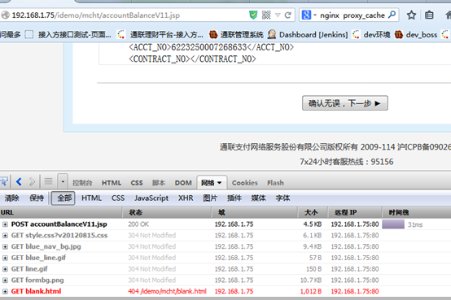
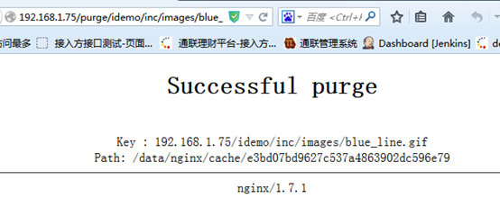
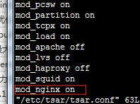

Nginx实践
1 介绍
1.1 功能
nginx [engine x]是Igor Sysoev编写的一个HTTP和反向代理服务器，另外它也可以作为邮件代理服务器。
1.2 优势
1 可以高并发连接：官方测试Nginx能够支撑5万并发连接，在实际生产环境中可支持2～4万并发连接数。
2 内存消耗少：同等硬件环境下，Nginx的处理能力相当于Apache的5～10倍。
3 Nginx作为WEB服务器，Nginx处理静态文件、索引文件、自动索引的效率非常高。
4 Nginx作为代理服务器，Nginx可以实现无缓存的反向代理，提高网站的性能
5 Nginx作为负载均衡服务器，内部可以支持PHP、也可以支持HTTP代理服务器对外进行服务，同时还支持简单的容错和利用算法进行负载
6 成本低廉：Nginx为开源软件，采用的是2-clause BSD-like协议，可以免费使用，并可用于商业用途。该协议衍生自BSD协议，但删掉了其中的“不可以用开源代码的作者/机构名字和原来产品的名字做市场推广”。
7 其他：配置文件简单，支持Rewrite重写规则，内置的健康检查功能，节省带宽，稳定性高，支持热部署。
1.3 缺点
功能没有apache支持的多，没有很多额外的功能。
不支持cgi,仅支持fastcgi方式（fastcgi通过监听tcp接受远程请求）。
代理方面，不支持Https代理
2 成功案例
2.1 nginx客户
它已经在众多流量很大的俄罗斯网站上使用了很长时间，这些网站包括Yandex、Mail.Ru、VKontakte，以及Rambler。据Netcraft统计，在2012年8月份，世界上最繁忙的网站中有11.48%使用Nginx作为其服务器或者代理服务器。部分成功案例请见： Netflix， Wordpress.com， FastMail.FM。
国内客户：金山、新浪、迅雷
2.2 nginx的修改版tengine的客户
天猫、淘宝、支付宝、
51cto、腾讯、土豆、京东、酷六、PPLIVE、开源中国、凤凰网、Internet Archive等
数据来源： http://tengine.taobao.org/download/tengine@alibaba.pdf
3 入门篇
3.1 windows下安装启动
本文使用windows版本，总共三个步骤，下载，解压、启动。
1. 下载
http://www.nginx.org/download/nginx-1.1.2.zip
2. 解压
解压到目录D:\nginx-1.1.2
3. 启动
双击nginx.exe就可以了，也可以通过命令行执行start nginx.exe。
如果在命令行中，执行nginx.exe，就会进入监听状态。
4. 访问http://127.0.0.1/ 就可以看到了。
5. 其他命令：
停止命令
nginx -s stop。
如果执行了多次ngin.exe，只能关闭其中的一个。D:\nginx-1.1.2\logs\nginx.pid 这个文件记录可以最后一个打开的进程编号。
更多可以参考
http://tengine.taobao.org/book/appendix_c.html#nginxwindows
3.2 linux下安装启动
在centos环境下
1. yum install nginx #安装
2. service nginx start #启动
3. 然后客户端通过浏览器访问 http://127.0.0.1/ 就可以了
查看安装文件
[root@ippdev5 ~]# find / -name nginx
/usr/share/nginx
/usr/sbin/nginx
/var/log/nginx #日志位置
/var/lib/yum/repos/x86_64/6/nginx
/var/cache/yum/x86_64/6/nginx
/var/cache/nginx
/etc/logrotate.d/nginx
/etc/rc.d/init.d/nginx #启动文件
/etc/nginx
/etc/sysconfig/nginx
http://tengine.taobao.org/book/appendix_c.html#nginxlinux
3.3 nginx工作模型
nginx启动时会启动一个master的主进程，然后是从进程。从进程的数目和配置相关，默认是一个。master进程接受用户的操作，然后把相关信号在传递给个个worker进程。 连接请求由work进程负责处理。

参考资料 http://tengine.taobao.org/book/chapter_02.html#id1
3.4 配置
配置是个技术活，首先要知道配置文件的路径和配置文件的规则。
3.4.1 配置文件路径
1. windwos配置文件：nginx-1.1.2\conf\nginx.conf
2. linux环境，配置文件路径
配置一般的路径： /etc/nginx/nginx.conf
yum install安装后，配置文件在/etc/nginx/nginx.conf 和 conf.d下面。
3.4.2 配置文件格式
配置文件分为单项配置和组合配置
1. 单项配置格式：
指令 [指令选项] 值;(包括分号)
2. 组合配置格式：
指令 [值] {
（单项配置或者多项配置）*
}
注意：官方没有这么描述，绝大部分的规则是这两种。
nginx常用的三个组合配置 http、server、location,注意它们是嵌套关系。
http {
server {
location {
}
}
}
在配置的时候一定分清楚配置项是在哪个组合配置中配置的，一般指令参考中会指明是哪个指令（正式的说法叫指令上下文），这三个层次关系一定要记住。
3.4.3 默认配置详解
通过下面这个命令可以，查看nginx的有效配置（过滤了注释和空行）
grep -v '^\s*#' /etc/nginx/nginx.conf | grep -v "^$"
精简配置如下
worker_processes 1; #使用一个进程处理http请求
events {
worker_connections 1024; #每个进程处理1024个连接
}
http {
include mime.types; # mime文件类型的定义
default_type application/octet-stream; #默认的文件类型
sendfile on; # 支持文件发送
keepalive_timeout 65; # 连接保持时间65秒
server { #定义一个服务器
listen 80; # 监听80端口
server_name localhost; # 服务器的名称
location / { # url 匹配 / 执行下面的规则
root html; # web的根目录，相对目录是在nginx下面
index index.html index.htm; # index首页查找顺序，先找index.html,找不到找index.htm
}
error_page 500 502 503 504 /50x.html; # 错误码是 500等的时候，匹配50x.html页面
location = /50x.html {
root html; # 50x.html所在的根目录
}
}
}
3.5 小实验
3.5.1 nginx命令
1. 帮助命令
nginx –h
2. 查看版本和支持的模块
nginx –V

3. 优雅重启命令，等待work进程处理完请求
nginx –s reload
4. 测试配置，每次修改配置后测试一下
nginx –t
其他命令可以通过帮助查看
3.5.2 查看日志
server {
root /spool/vhost/data/$host;
access_log /var/log/nginx/log/host.access.log ;
access_log指令说明在/varlog/nginx/log/ host.access.log 有访问日志
3.5.3 查看nginx状态
location /status { #定义路径
stub_status on; #开启监控
}
配置完后重新启动Nginx后我们可以通过浏览器访问http://localhost/status 查看
Active connections //当前 Nginx 正处理的活动连接数。
server accepts handled requests //总共处理了8 个连接 , 成功创建 8 次握手,总共处理了500个请求。
Reading //nginx 读取到客户端的 Header 信息数。
Writing //nginx 返回给客户端的 Header 信息数。
Waiting //开启 keep-alive 的情况下，这个值等于 active - (reading + writing)，意思就是 Nginx 已经处理完正在等候下一次请求指令的驻留连接
通过命令查看
3.5.4 定制目录
location / {
#root html;
root d:\myweb; #修改root的根目录
index index.html index.htm; #修改首页查找的顺序
修了：
1. 根目录为 d:\myweb。 尽量使用这种路径风格 d:/myweb, 要不然会在转移字符下出问题，nginx没有检测。
2. 修改主页查找顺序先找index.html，找不到查找index.htm
重新加载配置
nginx -s reload 记得每次修改后都要执行！
3.5.5 监听多个端口
server {
listen 80;
listen 81;
}
同时监听80,81端口，访问http://127.0.0.1和访问http://127.0.0.1:81/一样的效果。
3.5.6 配置多个端口
独立的监听端口配置
server
{
listen 82;
location / {
root html;
index index.html index.htm;
}
3.5.7 配置虚拟主机
通过不同的域名，实现加载不同的内容。
server
{
listen 80;
server_name allinpay.com;
location / {
root html1;
index index.html index.htm;
}
}
server
{
listen 80;
server_name allinpay.net;
location / {
root html2;
index index.html index.htm;
}
}
都是监听80端口，通过则访问不同的域名访问不同的路径
3.5.8 配置虚拟目录
在server上下文中，定义wiki的虚拟目录
location /wiki {
#加不加/都可以
#alias d:/myweb/mywiki/;
alias d:/myweb/mywiki; #
index index.html index.htm ;
}
http://ip/wiki 则访问 d:/myweb/mywiki下面的目录
定义虚拟目录的时候，注意目录匹配的优先级。配置文件的先后顺序匹配。
注意alias和root的区别
location /wiki {
root d:/myweb/mywiki;
index index.html index.htm ;
}
实际访问的目录是 d:/mweb/mywiki/wiki
3.5.9 文件服务器
location /download {
alias /root/download; # 本机目录
autoindex on; #自动产生 索引
limit_rate 512k; #下载速度不超过512K
charset utf-8; # html网站编码格式
autoindex_exact_size off; #友好显示文件大小
autoindex_localtime on; #使用本地时间
index index.html; #默认主页
}
http://wiki.nginx.org/HttpAccessModule#allow
3.5.10 访问限制
location / {
allow 127.0.0.1； #本机访问
allow 192.168.1.0/24; #192.168.1.0网段可以访问
deny all; #其他禁止访问
}
http://nginx.org/en/docs/http/ngx_http_access_module.html
4 提高篇
4.1 Location详解
语法: | location [ = | ~ | ~* | ^~ ] uri { ... } |
默认值: | — |
上下文: | server, location |
url匹配规则：
1. 有两种匹配规则，第一种是前缀字符串(=,/)，第二种是正则表达式。使用正则表达式的时候需要在路径开始添加“~*”前缀 (不区分大小写)，或者“~”前缀(区分大小写)
1． 使用“=”前缀可以定义URI和路径的精确匹配，如果发现匹配，则终止路径查找。
2． 匹配过程
a. 先查找前缀字符串最长匹配
b. 如果是精确匹配这选中,结束
c. 如果不是精确匹配则备选
d. 则按照配置文件的顺序查找正则，
e. 如果匹配正则则使用,结束
f. 如果还找不到，则重新备选的匹配， 结束
让我们用一个例子解释上面的说法：
location = / {
[ configuration A ]
}
location / {
[ configuration B ]
}
location /documents/ {
[ configuration C ]
}
location ^~ /images/ {
[ configuration D ]
}
location ~* \.(gif|jpg|jpeg)$ {
[ configuration E ]
}
请求“/”匹配配置A， 请求“/index.html”匹配配置B， 请求“/documents/document.html”匹配配置C， 请求“/images/1.gif”匹配配置D， 请求“/documents/1.jpg”匹配配置E。
前缀“@”定义了命名路径。这种路径不在一般的请求处理中使用， 而是用在请求重定向中。这些路径不能嵌套，也不能包含嵌套路径。
常用的表达式
^/image/ 以/image/开头的uri
.(gif|jpg|jpeg|png|bmp|ico)$ 以图片结尾的文件
参考资料http://nginx.org/cn/docs/http/ngx_http_core_module.html#location
4.2 Nginx全局变量
下面是可以用作判断的全局变量
例：http://localhost:88/test1/test2/test.php
$host：localhost
$server_port：88
$request_uri：http://localhost:88/test1/test2/test.php
$document_uri：/test1/test2/test.php
$document_root：D:\nginx/html
$request_filename：D:\nginx/html/test1/test2/test.php
Nginx支持的http变量实现在 ngx_http_variables.c 的 ngx_http_core_variables

参考资料:
http://www.cnblogs.com/AloneSword/archive/2011/12/10/2283483.html
4.3 URL重写
通常将用户请求的url转换成实际的url,已达到用户友好、安全或者部署的要求。
参考：http://wiki.nginx.org/HttpRewriteModule
4.3.1 基础
rewrite 的语法格式
Syntax: | rewrite regex replacement [ flag ] |
Default: | 无 |
Context: | server |
rewrite工作机制是通过正则表达式的组匹配模式匹配请求的URL，然后根据后面的规则定义新的URL。
举个例子：
一个restful风格转换
用户请求 /user/1
web服务器实际上是 /user.jsp?id=1
rewrite的规则: rewrite /user/(\d+) /user.jsp?id=$1
$1就代表(\d+)匹配到的字符串
flag标记有：
last 相当于Apache里的[L]标记，表示完成rewrite
break 终止匹配, 不再匹配后面的规则
redirect 返回302临时重定向 地址栏会显示跳转后的地址
permanent 返回301永久重定向 地址栏会显示跳转后的地址
正则表达式匹配，其中：
~ 为区分大小写匹配
~* 为不区分大小写匹配
!~和!~*分别为区分大小写不匹配及不区分大小写不匹配
文件及目录匹配，其中：
-f和!-f用来判断是否存在文件
-d和!-d用来判断是否存在目录
-e和!-e用来判断是否存在文件或目录
-x和!-x用来判断文件是否可执行
4.3.2 配置实例
在Location上下文中
跳转到特定目录
例如下面设定nginx在用户使用ie的使用重定向到/nginx-ie目录下：
if ($http_user_agent ~ MSIE) {
rewrite ^(.*)$ /nginx-ie/$1 break;
}
上下：Location
域名跳转
访问qq.com直接跳转到news.qq.com
if ($host ~ ^qq\.com") {
rewrite ^(.*) http://news.qq.com$1/ permanent;
}
上下：Location
防盗链
location ~* \.(gif|jpg|swf)$ {
#如果上一个连接不是从jd.com下面访问静态资源的,说明是个无效的连接
invalid_referers none blocked jd.com;
if ($invalid_referer) {
rewrite ^/ http://$host/err.html; #定向到error界面
}
}
上下：Location
4.4 正向代理
正向代理就是做代理服务器的功能。nginx做中间人，转发客户端请求到目标主机上。
server {
listen 8000;
server_name localhost;
client_header_buffer_size 32k;
large_client_header_buffers 4 128k;
location / {
proxy_buffering on;
proxy_buffer_size 32k;
proxy_buffers 8 64k;
proxy_busy_buffers_size 128k;
#
proxy_set_header Host $host;
proxy_set_header X-Real-IP $host;
proxy_set_header X-Forwarded-For $host;
# 转发到对应的目标主机上
proxy_pass http://$http_host$request_uri;
resolver 114.114.114；
resolver_timeout 5s;
proxy_send_timeout 300;
proxy_read_timeout 300;
proxy_connect_timeout 30s;
#关闭访问日志，如果需要，默认是开启的。
access_log off;
}
}
浏览器设置127.0.0.1 8000，注意选中本地也使用代理服务器。
常见错误
错误：bad gateway 502
查看错误日志
2011/09/18 17:53:53 [error] 7504#7580: *1 no resolver defined to resolve www.baidu.com, client: 127.0.0.1, server: localhost, request: "GET http://www.baidu.com/ HTTP/1.1", host: "www.baidu.com"
在http中配置
#dns服务器或者网关地址,
resolver 114.114.114
注意：
1. 不能有hostname
2. 必须有resolver, 即dns，即上面的x.x.x.x，换成你们的DNS服务器ip即可
3 . $http_host和$request_uri是nginx系统变量，不要想着替换他们，保持原样就OK。
查看dns方法
cat /etc/resolv.conf


参考资料
http://wiki.nginx.org/HttpProxyModule 参考大全
4.5 反向代理
反向代理就是把客户端的请求，转发到后台服务器中。
4.5.1 单个
location / {
proxy_pass http://localhost:8080;
proxy_set_header X-Real-IP $remote_addr;
}
将jenkins上的请求，转发到8080的服务上
location /jenkins {
proxy_pass http://127.0.0.1:8080;
}
会自动访问 http://127.0.0.1:8080/jenkins ; URL保持不变 http://yxz/jenkins
注意程序要有相同的目录，目标服务器需要有jenkins目录。
4.5.2 集群
当页面的访问量非常大的时候，往往需要多个应用服务器来共同承担动态页面的执行操作，这时我们就需要使用集群的架构。 Nginx 通过 upstream 指令来定义一个服务器的集群。
4.5.2.1 upstream 配置
upstream tomcats {
server 127.0.0.1:80 weight=10;
#server 127.0.0.1:81 weight=10;
server 127.0.0.1:82 weight=10;
}
代理跳转 proxy_pass 指令的写法变成了：
location / {
proxy_pass http://tomcats;
proxy_set_header X-Real-IP $remote_addr;
}
在 Nginx 的集群配置中，Nginx 使用最简单的平均分配规则给集群中的每个节点分配请求。一旦某个节点失效时，或者重新起效时，Nginx 都会非常及时的处理状态的变化，以保证不会影响到用户的访问。
第二个例子
upstream backend {
server backend1.example.com weight=5;
server 127.0.0.1:8080 max_fails=3 fail_timeout=30s;
server unix:/tmp/backend3;
}
默认情况下，nginx按加权轮转的方式将请求分发到各服务器。 在上面的例子中，每7个请求会通过以下方式分发： 5个请求分到backend1.example.com， 一个请求分到第二个服务器，一个请求分到第三个服务器。 与服务器通信的时候，如果出现错误，请求会被传给下一个服务器，直到所有可用的服务器都被尝试过。 如果所有服务器都返回失败，客户端将会得到最后通信的那个服务器的（失败）响应结果。
4.5.2.2 server配置
语法: | server address [parameters]; |
默认值: | — |
上下文: | upstream |
定义服务器的地址address和其他参数parameters。 地址可以是域名或者IP地址，端口是可选的，或者是指定“unix:”前缀的UNIX域套接字的路径。如果没有指定端口，就使用80端口。 如果一个域名解析到多个IP，本质上是定义了多个server。
你可以定义下面的参数：
weight=number
设定服务器的权重，默认是1。
max_fails=number
设定Nginx与服务器通信的尝试失败的次数。在fail_timeout参数定义的时间段内，如果失败的次数达到此值，Nginx就认为服务器不可用。在下一个fail_timeout时间段，服务器不会再被尝试。 失败的尝试次数默认是1。设为0就会停止统计尝试次数，认为服务器是一直可用的。 你可以通过指令proxy_next_upstream、 fastcgi_next_upstream和 memcached_next_upstream来配置什么是失败的尝试。 默认配置时，http_404状态不被认为是失败的尝试。
fail_timeout=time
设定
· 统计失败尝试次数的时间段。在这段时间中，服务器失败次数达到指定的尝试次数，服务器就被认为不可用。
· 服务器被认为不可用的时间段。
默认情况下，该超时时间是10秒。
backup
标记为备用服务器。当主服务器不可用以后，请求会被传给这些服务器。
down
标记服务器永久不可用，可以跟ip_hash指令一起使用。
4.6 反向代理负载均衡
nginx通过upstream 指令完成负载均和和健康检查
4.6.1 Nginx负载均衡基础知识
upstream目前支持5种方式的分配
1)、轮询（默认）
每个请求按时间顺序逐一分配到不同的后端服务器，如果后端服务器down掉，能自动剔除。
2)、weight
指定轮询几率，weight和访问比率成正比，用于后端服务器性能不均的情况。
2)、ip_hash
每个请求按访问ip的hash结果分配，这样每个访客固定访问一个后端服务器，可以解决session的问题。
3) fair（第三方）
按后端服务器的响应时间来分配请求，响应时间短的优先分配。
4) url_hash（第三方）
5) session stickess（第三方）
4.6.2 Nginx 负载均衡实例1
upstream back_servers {
server 127.0.0.1:9090 down;
server 127.0.0.1:8080 weight=2;
server 127.0.0.1:6060;
server 127.0.0.1:7070 backup;
}
每个设备的状态设置为:
a)down 表示单前的server暂时不参与负载
b)weight 默认为1.weight越大，负载的权重就越大。
c)max_fails :允许请求失败的次数默认为1.当超过最大次数时，返回proxy_next_upstream 模块定义的错误
d)fail_timeout:max_fails次失败后，暂停的时间。
e)backup：其它所有的非backup机器down或者忙的时候，请求backup机器。所以这台机器压力会最轻。
nginx支持同时设置多组的负载均衡，用来给不用的server来使用。
参考资料
http://nginx.org/en/docs/http/ngx_http_upstream_module.html
http://nginx.org/cn/docs/http/ngx_http_upstream_module.html
4.7 客户端缓存
4.7.1 Expires
通过expires指令来实现。
浏览器缓存静态资源，再次访问浏览器不发起新的请求。
不发起请求的几种方式：
a. 地址栏访问，不会向服务器发起请求
b. 关闭tab，新开也不会重新访问。
c. 关闭浏览器，重新打开也不会重新访问。
配置
location ~ .*\.(gif|jpg|jpeg|png|bmp|swf)$
{
expires 30d;
}
location ~ .*\.(js|css)?$
{
expires 1h;
}
而下面的配置则定义了几种文件类型的请求处理方式。
location ~ \.(htm|html|gif|jpg|jpeg|png|bmp|ico|css|js|txt)$ {
root /opt/webapp;
expires 24h;
}
通过 expires 指令来控制其在浏览器的缓存，以减少不必要的请求。 expires 指令可以控制 HTTP 应答中的“ Expires ”和“ Cache-Control ”的头标（起到控制页面缓存的作用）。您可以使用例如以下的格式来书写 Expires：
expires 1 January, 1970, 00:00:01 GMT;
expires 60s;
expires 30m;
expires 24h;
expires 1d;
expires max;
expires off;
在服务端设置静态文件的expire参数是指 客户的本地浏览器缓存设置.
正值expire date = 当前时间 + 设置的time时间，负值不缓存。
4.7.2 缓存效果

4.7.3 刷新访问的结果
F5刷新，会重新请求

4.8 代理缓存
nginx通过proxy_cache指令来实现，当然还有其他几种通过memcached，通过ncache。这种方式内置，也最成熟。适合从后端获取资源，然后存储。功能类似squid。Nginx已经具备Squid所拥有的Web缓存加速功能、清除指定URL缓存的功能。而在性能上，Nginx对多核CPU的利用，胜过Squid不少。 另外，在反向代理、负载均衡、健康检查、后端服务器故障转移、Rewrite重写、易用性上，Nginx也比Squid强大得多。这使得一台Nginx可 以同时作为“负载均衡服务器”与“Web缓存服务器”来使用。
4.8.1 proxy_cache
#设置Web缓存区名称为cache_one，内存缓存空间大小为200MB，1天没有被访问的内容自动清除，硬盘缓存空间大小为30GB。
proxy_cache_path /data/proxy_cache_dir levels=1:2 keys_zone=cache_one:200m inactive=1d max_size=30g;
location /
{
#如果后端的服务器返回502、504、执行超时等错误，自动将请求转发到upstream负载均衡池中的另一台服务器，实现故障转移。
proxy_next_upstream http_502 http_504 error timeout invalid_header;
proxy_cache cache_one;
#对不同的HTTP状态码设置不同的缓存时间
proxy_cache_valid 200 304 12h;
#以域名、URI、参数组合成Web缓存的Key值，Nginx根据Key值哈希，存储缓存内容到二级缓存目录内
proxy_cache_key $host$uri$is_args$args;
proxy_set_header Host $host;
proxy_set_header X-Forwarded-For $remote_addr;
proxy_pass http://backend_server;
expires 1d;
}
#定义缓存key， 区域allinpay大小100m,自动清除时间1d,磁盘缓存10
proxy_cache_path /data/nginx/cache keys_zone=allinpay:100m;
proxy_temp_path /data/nginx/temp;
#注：proxy_temp_path和proxy_cache_path指定的路径必须在同一分区
proxy_temp_path /data0/proxy_temp_dir;
#设置Web缓存区名称为cache_one，内存缓存空间大小为200MB，1天没有被访问的内容自动清除，硬盘缓存空间大小为30GB。
proxy_cache_path /data0/proxy_cache_dir levels=1:2 keys_zone=cache_one:200m inactive=1d max_size=30g;
proxy_cache_path /data/nginx/cache keys_zone=allinpay:100m;
proxy_temp_path /data/nginx/temp;
[root@ippdev5 ~]# mkdir -p /data/nginx/
[root@ippdev5 ~]# service nginx restart
常见问题
1. 启动错误
nginx: [emerg] mkdir() "/data/nginx/cache" failed (2: No such file or directory)
nginx: configuration file /etc/nginx/nginx.conf test failed
原因没有创建目录
2. 缓存默认时间10分钟
If cached data is not requested for time defined by the inactive parameter, than that data is removed from the cache. The inactive parameter defaults to 10 minutes (10m).
4.8.1.1 proxy_cache_key的2种配法：
1. 通过浏览器获取的URL做KEY
域名：端口 浏览器完整地址（包括动态参数，如:www.xxx.com:80/goods/1.html）
proxy_cache_key "$host:$server_port$request_uri";
2. 通过真实的URL地址做KEY
域名：端口 真实请求地址（不是rewrite后的） ? 参数
(如www.xxx.com:80/index.jsp?id=111)
proxy_cache_key "$host:$server_port$uri$is_args$args";
建议采用第一种
4.8.1.2 缓存效果

全部缓存了

重新加载jsp

从缓存中加载
参考资料
http://blog.s135.com/nginx_cache/
http://www.cnblogs.com/meteoric_cry/archive/2011/05/14/2046263.html
http://bbs.linuxtone.org/thread-7120-1-1.html nginx缓存cache的几种方式
http://wiki.nginx.org/HttpProxyModule 参考大全
http://blog.chinaunix.net/uid-25018796-id-94903.html 详细配置
http://nginx.org/en/docs/http/ngx_http_proxy_module.html 参数详解
4.8.2 缓存路径计算
http://zhumeng8337797.blog.163.com/blog/static/10076891420142182952255/
先看proxy_cache_path 配置
proxy_cache_path /var/tmp/nginx/cache levels=1:2 keys_zone=cache_one:200m inactive=1d max_size=30g;
1，nginx反向代理缓存的目录为/var/tmp/nginx/cache
2，缓存文件的key和其它信息放在一个10M的共享内存中，命名为one
3，缓存文件最大占用1G磁盘空间
4，level=1:2
比如有一个URL是http://www.libertyvps.com/1.png，那么这个图片如果被缓存那他的路径就是/var/tmp/nginx/cache/9/ad/e0bd86606797639426a92306b1b98ad9
计算方法：
1) nginx先把请求地址/1.png用md5进行哈希，得到e0bd86606797639426a92306b1b98ad9
2) level=1:2就是把最后一位数9拿出来建一个目录，然后再把9前面的2位再建一个目录，最后把刚才得到的这个缓存文件放到9/ad目录中。
同样的方法推理，如果level=1:1，那么缓存文件的路径就是/var/tmp/nginx/cache/9/d/e0bd86606797639426a92306b1b98ad9
上面的例子只是最简单的URL，如果带参数呢？
比如http://www.libertyvps.com/1.png?v=1，那么缓存路径还是一样吗？
先对比下这个两个配置
proxy_cache_key $uri;
proxy_cache_key $uri$is_args$args;
第一个配置只根据不带参的$uri进行哈希，所以这时候加了参数和没加参数是一样的结果；
第二个配置就是把域名之后所有的内容(也就是$request_uri)都进行哈希。
说明：
1) MD5哈希过之后的路径是十六进制的，对于nignx来说查询速度更快；
2) level=1:2会比level=1:1建立更多的目录，适合缓存海量文件，因为单个目录下的文件太多会降低IO性能；
3) 缓存会先被写入写入临时文件，所以建议proxy_cache_path和proxy_temp_path放在同一个文件系统当中；
4) 虽然nginx有通过HTTP协议删除缓存的第三方插件，但是我考虑之后觉得还是不用的好。nginx的缓存本来就不是很成熟，外加一个第三方插件就更不让人放心了

4.8.3 缓存命中率
http://lmdkfs.blog.163.com/blog/static/74611324201421283237778/
查看命中的缓存
1、在http header上增加命中显示
nginx提供了$upstream_cache_status这个变量来显示缓存的状态，我们可以在配置中添加一个http头来显示这一状态，达到类似squid的效果。
location / {
#Nginx_Cache名称任意
add_header Nginx-Cache “$upstream_cache_status”;
日志
log_format 添加变量 "$upstream_cache_status"
统计方法：用HIT的数量除以日志总量得出缓存命中率
awk '{if($NF=="\"HIT\"") hit++} END {printf "%.2f%",hit/NR}' access.log
$upstream_cache_status包含以下几种状态：
·MISS 未命中，请求被传送到后端
·HIT 缓存命中
·EXPIRED 缓存已经过期请求被传送到后端
·UPDATING 正在更新缓存，将使用旧的应答
·STALE 后端将得到过期的应答
统计日志脚本：
1. 每天0点切割nginx日志
2. 将每日的缓存统计存入日志以供参考
# crontab –l
1 0 * * * /opt/shell/nginx_cache_hit >> /usr/local/openresty/nginx/logs/hit
# cat /opt/shell/nginx_cache_hit
#!/bin/bash
LOG_FILE=’/usr/local/nginx/logs/access.log.1′
LAST_DAY=$(date +%F -d “-1 day”)
awk ‘{if($NF==”\”HIT\”") hit++} END {printf “‘$LAST_DAY’: %d %d %.2f%\n”, hit,NR,hit/NR}’ $LOG_FILE
4.8.4 使用内存作为文件系统
nginx本身不提供缓存到内存的功能，不过可以通过使用技巧来做，就是通过内存文件系统来实现。 /dev/shm为默认虚拟内存。 ，可以自定义一个虚拟文件系统。
自定义一个虚拟文件系统
mkdir –p /data/nginx
mount nginx_fs /data/nginx -t tmpfs -o size=100m

测试读写速度
注意：
自定义的内存文件系统，重启丢失。
开机自启动
编辑vi /etc/fstabl
nginx /data/nginx tmpfs size=200m 0 0

综合起来可以简单优化静态文件：
location ~ .*\.(js|css|gif|jpg|jpeg|png|bmp|swf|flv)$
{
proxy_pass http://backend;
expires 6h; #设置浏览器过期时间
proxy_cache allinpay;#使用allinpay这个keys_zone
proxy_cache_valid 200 302 1h;#200和302状态码保存1小时
proxy_cache_valid 301 1d;#301状态码保存一天
proxy_cache_valid any 1m;#其它的保存一分钟
}
参考
http://blog.csdn.net/han_dongwei/article/details/12709323 nginx cache静态化+tmpfs 高性能cdn方案 原创-胡志广
4.8.5 清空缓存
PROXY_CACHE更新缓存必须依赖于mod_purge或者删除相应的缓存目录,
无需重启nginx
https://192.168.1.75/purge/idemo/inc/images/reddot.gif
{kind=link}
location ~ /purge(/.*)
{
#设置只允许指定的IP或IP段输入正确的密码才可以清除URL缓存。(Nginx
allow 127.0.0.1;
allow 192.168.1.0/24;
deny all;
proxy_cache_purge cache_one $host$1$is_args$args;
}
#用于清除缓存,假设一个URL为http://192.168.4.178/test.gif,通过访问
#http://192.168.4.178/purge/test.gif可以清楚该url的缓存
location ~ /purge(/.*)
{
#设置值允许指定的ip或ip段才可以清除URL缓存
allow 127.0.0.1
allow 192.168.0.0/16;
deny all;
proxy_cache_purge cache_one $host$1$is_args$args
}
access_log off;
需要编译
[root@ippdev5 nginx]# vi /etc/nginx/conf.d/default.conf
[root@ippdev5 nginx]# service nginx restart
nginx: [emerg] unknown directive "proxy_cache_purge" in /etc/nginx/conf.d/default.conf:56
nginx: configuration file /etc/nginx/nginx.conf test failed
注意表达式顺序，要把purge放在 缓存前面才能匹配


再次访问，

4.9 fast cgi工作模式
以php为例，其他的perl、python类似
FastCGI 访问php-cgi
为了解决cgi，每次访问都要创建一个进程的不足。
引入来的fastcgi，充当一个线程池，每次访问都从线程池中取。
location ~ \.php$ {
#这个root需要设置对,绝对路径没有问题，但是虚拟目录有问题。不知道如何设置script
root d:/myweb;
fastcgi_pass 127.0.0.1:9000;
fastcgi_index index.php;
fastcgi_param SCRIPT_FILENAME d:/myweb$fastcgi_script_name;
include fastcgi_params;
}
实际php的应用在d:/myweb/mywiki下。
虚拟目录中配置
虚拟目录
location /wiki {
alias d:/myweb/mywiki;
index index.php index.html index.htm ;
}
对应的脚本路径
location ~ ^/wiki/.+\.php$ {
root d:/myweb/mywiki;
rewrite /wiki/(.*\.php?) /$1 break;
#include fcgi.conf;
include fastcgi_params;
fastcgi_pass 127.0.0.1:9000;
fastcgi_index index.php;
fastcgi_param SCRIPT_FILENAME d:/myweb/mywiki$fastcgi_script_name;
}
常见配置错误
1. fast-cgi没有找到
2. fast-cgi配置好了，但是脚本路径不对，提示如下错误。
访问php文件，却报No input file specified.
3. 504错误
Fastcgi_pass 和php-cgi开启的端口不一致
PHP支持FastCGI方式
在php.ini开启 cgi.fix_pathinfo=1
以cgi方式允许
D:\php-5.3.8-nts-Win32-VC9-x86>php-cgi.exe -b 127.0.0.1:9000 -c D:\php-5.3.8-nts-Win32-VC9-x86\php.ini
这个比较变态 php-cgi结束进程，端口也不释放，需要强制关闭才行（cport)
查看端口是否占用
The page you are looking for is temporarily unavailable.
Please try again later.
PHP虚拟目录的问题
虚拟目录php-fastcgi的支持
参考 http://mengdejun.iteye.com/blog/98560
解析脚本路径错误，问题原因nginx提供的脚本路径php fastcgi进程找不到对应的目录和文件。
参考资料
http://nginx.org/en/docs/http/ngx_http_fastcgi_module.html
4.10 Nginx处理 JAVA
4.10.1 代理方式
访问动态页面的过程，通过代理模式访问后端。这种比较常见.

4.10.2 反向代理集群方式
参考前面集群的方式
4.10.3 nginx_upstream_jvm_route
这个模块的功能是nginx把客户端请求发送同一个session服务器中，也就是说nginx具有粘性。
ip_hash也有粘性，但是负责不能均衡，如果是同一地区访问，都是一个ip地址，会造成有的服务器压力大，有的服务器压力小。
注意的问题是，如果有多个nginx服务器，显然不可用的，还有一个就是这个是对nginx直接打补丁，新版本需要测试。
打补丁
cd nginx-0.7.59 # or whatever
patch -p0 < /path/to/this/directory/jvm_route.patch
编译
# ./configure --prefix=/usr/nginx-0.8.1 --with-http_stub_status_module --add-module=/path/to/this/directory/
#make
#make install
以下配置：
1. Resin:
upstream backend {
server 192.168.0.100 srun_id=a;
server 192.168.0.101 srun_id=b;
server 192.168.0.102 srun_id=c;
server 192.168.0.103 srun_id=d;
jvm_route $cookie_JSESSIONID;
}
2. Tomcat:
upstream backend {
server 192.168.0.100 srun_id=a;
server 192.168.0.101 srun_id=b;
server 192.168.0.102 srun_id=c;
server 192.168.0.103 srun_id=d;
jvm_route $cookie_JSESSIONID reverse;
}
参考资料：http://code.google.com/p/nginx-upstream-jvm-route/
4.11 日志
指令格式
语法: | access_log path [format [buffer=size]]; |
默认值: | access_log logs/access.log combined; |
上下文: | http, server, location, if in location, limit_except |
参考
http://nginx.org/en/docs/http/ngx_http_log_module.html
http://nginx.org/cn/docs/http/ngx_http_log_module.html
4.12 监控状态
参考 http://wiki.nginx.org/HttpStubStatusModule
location /nginx_status {
stub_status on; #开启状态监控
access_log off; #关闭访问日志
allow SOME.IP.ADD.RESS; #白名单
deny all; #黑名单
}
得到的页面如下：
Active connections: 291
server accepts handled requests
16630948 16630948 31070465
Reading: 6 Writing: 179 Waiting: 106
Active connections //当前 Nginx 正处理的活动连接数。
server accepts handled requests //总共处理了8 个连接 , 成功创建 8 次握手,总共处理了500个请求。
Reading //nginx 读取到客户端的 Header 信息数。
Writing //nginx 返回给客户端的 Header 信息数。
Waiting //开启 keep-alive 的情况下，这个值等于 active - (reading + writing)，意思就是 Nginx 已经处理完正在等候下一次请求指令的驻留连接
4.13 文件编码
指定服务器文件输出的编码格式
如果使用请使用utf-8,source_charset不设置或者也使用utf-8
syntax: | charset charset | off; |
default: | charset off; #默认不转换 |
Ccontext: | http, server, location, if in location |
Adds the specified charset to the “Content-Type” response header field. If this charset is different from the charset specified in the source_charset directive, a conversion is performed.
请求返回的编码
The parameter off cancels the addition of charset to the “Content-Type” response header field.
nginx对编码转换支持的不好，所以不要使用这个转换。


参考
http://nginx.org/en/docs/http/ngx_http_charset_module.html#source_charset
4.14 请求超时
syntax: | keepalive_requests number; |
default: | keepalive_requests 100; |
context: | http, server, location |
This directive appeared in version 0.8.0.
Sets the maximum number of requests that can be served through one keep-alive connection. After the maximum number of requests are made, the connection is closed.
keepalive_timeout timeout [header_timeout]; | |
default: | keepalive_timeout 75s; |
context: | http, server, location |
The first parameter sets a timeout during which a keep-alive client connection will stay open on the server side. The zero value disables keep-alive client connections. The optional second parameter sets a value in the “Keep-Alive: timeout=time” response header field. Two parameters may differ.
4.15 客户端流量 限制
通过以下两条命令来完成。
指令名称：limit_rate
功 能：该指令用于指定向客户端传输数据的速度，速度的单位是每秒传输的字节数。需要明白的一点是该限制只是针对一个连接的设定，就是说如果同时有两个连接那么它的速度将会是该指令设置值的2倍，
如果需要在server级别对某些客户端限制速度，对于这种情况——这个指令可能并不适合，但是可设置$limit_rate变量，可以为该变量传递相应的值来实现，例如：
server { if ($slow) { set $limit_rate 4k; } } |
当然也可以通过设置X-Accel-Limit-Rate头(来自于NginxXSendfile模块)来控制由proxy_pass(来自于HttpProxyModule模块)返回的响应数据的速率，而没有使用X-Accel-Redirect头。
语 法: limit_rate speed
默 认 值: no
使用环境: http, server, location, if in location
指 令：limit_rate_after
功 能：limit_rate_after，这个命令中的“after”提示了我们，可以这样理解“在…后再限制速率为…”，没错，就是这个意思，它的语法为：limit_rate_after time(这是官方威客上http://wiki.nginx.org/HttpCoreModule#limit_rate的语法)，它的意思是以最大的速度下载time时长后，但是在实际的使用中发现命令limit_rate_after的参数是一个下载字节量的大小值，而不是时间值，因此上面的命令“limit_rate_after 3m”解释为：以最大的速度下载3M后。
语 法：limit_rate_after size
默 认 值：limit_rate_after 1m
使用字段：http, server, location, location中的if字段
4.16 HTTPS
4.16.1 https设置
主要增加了证书设置
1. 生成证书
yum install openssl openssl-devel
openssl genrsa -des3 -out allinpay.key 2048
opensll req -new -key allinpay.key -out allinpay.csr
openssl x509 -req -days 365 -in allinpay.csr -signkey allinpay.key -out allinpay.crt
2. 配置
server {
listen 443 ssl;
server_name localhost;
ssl_certificate /etc/nginx/conf.d/allinpay.crt;
ssl_certificate_key /etc/nginx/conf.d/allinpay.key;
3. 更多设置
1. #为一个server开启ssl支持
2. ssl on;
3. #为虚拟主机指定pem格式的证书文件
4. ssl_certificate /home/wangzhengyi/ssl/wangzhengyi.crt;
5. #为虚拟主机指定私钥文件
6. ssl_certificate_key /home/wangzhengyi/ssl/wangzhengyi_nopass.key;
7. #客户端能够重复使用存储在缓存中的会话参数时间
8. ssl_session_timeout 5m;
9. #指定使用的ssl协议
10. ssl_protocols SSLv3 TLSv1;
11. #指定许可的密码描述
12. ssl_ciphers ALL:!ADH:!EXPORT56:RC4+RSA:+HIGH:+MEDIUM:+LOW:+SSLv2:+EXP;
13. #SSLv3和TLSv1协议的服务器密码需求优先级高于客户端密码
14. ssl_prefer_server_ciphers on;
4.16.2 http和https合一配置
http和https可以放在一起，监听的时候指定那个是ssl就可以了，配置如下。

配置效果

参考资料
http://nginx.org/cn/docs/http/configuring_https_servers.html
http://www.cnblogs.com/tintin1926/archive/2012/07/12/2587311.html
5 高级篇
5.1 编译源代码
5.1.1 在windwos下的编译Nginx
在windows下编译nginx可以利用VC编译来调试nginx，当我们很熟悉了操作系统上层的实现之后转向分析nginx代码也方便一些。
在windows下编译nginx跟在Linux下的步骤差不多。利用svn工具下载源码，第三方网站下载的tar文件中没有win32的配置文件；由于configure文件是sh脚本，所以只能用第三方仿真软件，我这里用的是MinGW Shell；配置完成后就是编译，只要调用VC的编译工具cl.exe编译就行了。
下载工具
需要的工具有：
1.TortoiseSVN:http://downloads.sourceforge.net/project/tortoisesvn/1.7.5/Application/TortoiseSVN-1.7.5.22551-win32-svn-1.7.3.msi
2.MinGW32:http://10.10.4.6/download/7377061/8602355/3/exe/230/40/1322227850470_40/mingw-get-inst-20111118.exe
3.VC2010 express:http://download.microsoft.com/download/e/5/e/e5e362e1-6a2a-4ce3-bbac-659c9740ab04/vc_web.exe
上面的工具下载安装完成即可。
下载源码
源码地址在：svn://svn.nginx.org/nginx/trunk 使用svn将源码检出到本地任意目录，比如f:\nginx\trunk
目录结构如下：
配置代码环境
打开cmd命令行提示:
cmd
2.设置VC的环境变量：在命令提示符中键入命令（根据VC的安装目录不同而不同,x86为参数）
"C:\Program Files\Microsoft Visual Studio 10.0\VC\vcvarsall.bat" x86
设置MinGW：在命令提示符键入命令（根据MinGW32安装目录不同而不同）：
C:\MinGW\msys\1.0\msys.bat
检查环境：
弹出MinGW窗口，关闭其它的cmd窗口。在MinGW32的窗口输入:
cl.exe
cd /f/nginx/trunk
配置:
./auto/configure --prefix=. --with-cc-opt="-D FD_SETSIZE=4096" --without-http_rewrite_module --without-http_gzip_module --with-cc=cl
注解：
–prefix=. 表示安装目录在本目录下
–with-cc-opt=”-D FD_SETSIZE=4096″ 预定义宏FD_SETSIZE大小4096
–without-http_rewrite_module 不加载rewite模块
–without-http_gzip_module 不加载gzip模块
–with-cc=cl 编译器为cl
编译:
nmake
在obj/目录下为生成的中间文件和nginx.exe文件。
5.1.2 在linux下编译版本
5.1.2.1 下载
wget http://nginx.org/download/nginx-1.7.1.tar.gz
tar -xvzf nginx-1.7.1.tar.gz
5.1.2.2 配置编译选项
编译配置
./configure --sbin-path=/usr/sbin/nginx --conf-path=/etc/nginx/nginx.conf --with-pcre=/root/pcre-8.33 --with-zlib=/root/zlib-1.2.8 --with-http_stub_status_module --with-http_ssl_module --add-module=../ngx_cache_purge-2.1
说明：
--sbin-path 执行文件nginx的路径
--conf-path 配置文件的路径
--with-pcre 编译依赖pcre正则表达式库
--with-zlib 编译依赖zlib库
--with-xxxx 是开启某个功能特性
--add-module 是编译插件，插件下载源代码，然后指定目录就可以了。
更多资料：
http://nginx.org/en/docs/configure.html 编译选项
5.1.2.3 下载相关依赖包
1. PCRE - Perl Compatible Regular Expressions
linux下安装安装pcre-8.32
2. zlib
5.1.2.4 编译安装
make & make install
5.1.2.5 插件安装
http://labs.frickle.com/files/ngx_cache_purge-2.1.tar.gz
5.1.2.6 编译常见错误
configure: error: You need a C++ compiler for C++ support
说明已经安装 gcc,需要安装 gcc-c++,执行命令yum install gcc-c++
5.2 Nginx Linux服务
5.2.1 linux 把nginx加入到系统服务，并开机自己启动的方法
yum install nginx有这个脚本，也是直接使用。
/etc/rc.d/init.d/nginx
一。首先写一个shell脚本，脚本名称：nginx
参考 /etc/rc.d/init.d/nginx
二。将shell脚本放入到 /etc/rc.d/init.d/ 目录下，并执行下列命令
1：chmod +x /etc/rc.d/init.d/nginx （设置可执行权限）
2：chkconfig --add nginx （添加系统服务）
5.2.2 Nginx Windows服务
1. 下载微软的2个工具: instsrv.exe、srvany.exe
去微软网站下载安装Windows Server 2003 Resource Kit Tools(rktools.exe)
2. 运行命令
在rktools安装目录下(一般在C:\Program Files\Windows Resource Kits\Tools目录)可以发现这两个程序.在运行下面命令之前，确保将srvany.exe复制到nginx的安装(解压)目录下，然后运行:
Command代码
instsrv Nginx D:\nginx\srvany.exe
这样就安装了一个名为Nginx的服务。也就是将srvany.exe注册成一个服务Nginx。Net start Nginx时，肯定会运行srvany.exe。
3. 配置Nginx的运行参数：目的是运行srvany.exe时，附带运行D:\nginx\nginx.exe程序。
可以直接将配置导入到注册表
Window register代码
Windows Registry Editor Version 5.00
?[HKEY_LOCAL_MACHINE\SYSTEM\CurrentControlSet\Services\NGINX\Parameters]
"Application"="e:\……\nginx\nginx.exe"
"AppParameters"=""
"AppDirectory"="e:\……\nginx\"
现在就可以通过控制面板->管理员工具->服务中找到该服务，并启动和停止了。
但是，当停止Nginix服务后，访问浏览器仍然能看到网站。查看进程，你会发现，Nginx启动了两个nginx进程(根据nginx.conf的配置worker_processes 1;)，Fork出来的进程显然没有被停止，结果就是nginx永远关不掉。因此彻底关闭nginx请使用taskkill命令:
Command代码
taskkill /F /IM nginx.exe > nul
结果是写一个stop_nginx脚本来处理nginx停止的所有操作
Command代码
@echo off
echo Stopping nginx service...
net stop nginx
echo Kill nginx process...
taskkill /F /IM nginx.exe
参考
http://blog.slogra.com/?post=2
http://bluexp29.blog.163.com/blog/static/33858148201152275447553/
5.3 修改nginx服务标识
首先修改源文件，然后重新编译一下。
vi src/core/nginx.h
效果如下图
5.4 Nginx优化
nginx优化主要包括两个方面，一个是自身的优化，另一个是运行环境优化。
自身的优化包括支持高并发，高可靠，高性能，一般从支持连接数，集群，更好的网络模型，缓存等着手考虑，nginx应用场景不同，所以还要更具具体的应用场景做配置上的调整。另一个是nginx运行环境的优化，包括nginx运行的软硬件环境，硬件环境取决于服务类型选择和投入情况，软件优化只是从操作系统级别进行调整。
5.4.1 cpu调整
nginx多进程多线程模式，每个worker占用一个进程。
nginx使用的时候要指定工作的进程数，默认为1.
这个数目一般和处理器的数据
官方给出的建议：
一般一个进程足够了，你可以把连接数设得很大。如果有SSL、gzip这些比较消耗CPU的工作，而且是多核CPU的话，可以设为和CPU的数量一样。或 者要处理很多很多的小文件，而且文件总大小比内存大很多的时候，也可以把进程数增加，以充分利用IO带宽（主要似乎是IO操作有block）。
我们知道不管是多进程还是单一进程主要的目的是尽可能的压榨cpu。
一个进程的最大连接数是65535个，如果想突破这个连接数就必须增加进程数。高并发的情况下，需要提供进程数目。
多核多进程要比多核多线程更稳定，所以多核环境下尽可能配置成多进程。
配置成多进程唯一要考虑的是多进程切换问题所带来的开销。
高并发的时候配置成：和cpu一样的数量。
5.4.1.1 全局环境下配置工作线程
通过下面的命令查看cpu信息
cat /proc/cpuinfo | grep processor
如果cpu有四个核心
worker_processes 4;
worker_cpu_affinity 0001 0010 0100 1000;
如果cpu有八个核心
worker_processes 8;
worker_cpu_affinity 00000001 00000010 00000100 00001000 00010000 00100000 01000000 10000000;
如果cpu有十六个核心
worker_processes 16;
worker_cpu_affinity 0000000000000001 0000000000000010 0000000000000100 0000000000001000 0000000000010000 0000000000100000 0000000001000000 0000000010000000 0000000100000000 0000001000000000 0000010000000000 0000100000000000 0001000000000000 0010000000000000 0100000000000000 1000000000000000;
5.4.1.2 Windows多核稳定性测试
1． 测试环境

Window7


2． 一个工作进程

Cpu，windows系统自动分配。 全部可以用
结论：相当快，比较稳定。
四核


结论:直接不工作
配置 8
工作，但是很不稳定
结论：在其他配置，不可用。 windows系统上非常不稳定。
5.4.2 最大连接数
worker_connections是最大连接数，但是这个连接说是对一个worker进程来说的，所以 最大连接数 = worker_processes * worker_connections

注意worker_connection依赖worker_rlimit_nofile
worker_rlimit_nofile是worker工作进程资源限制中文件的数目，代表了worker进程的最大打开文件数限制，如果没有设置nginx高并发的时候会有“too many open files”问题了。

这个值受操作系统的限制，需要修改用户的打开文件限制
执行命令 ulimit –SHn 65535
5.4.3 网络工作模式
nginx会自动选择，这个可以不用配置。
events {
use epoll;
…
}
use设置用于复用客户端线程的轮询方法。如果你使用Linux 2.6+，你应该使用epoll。如果你使用*BSD，你应该使用kqueue。
5.4.4 压力测试
2000个并发 cpu使用率17%
3000个并发 cpu使用率20%
所以nginx对cpu的占用率非常低，内存增加100MB,性能瓶颈主要在网络IO。
下面是2000并发压力和3000并发压力的测试
5.4.4.1 2000个压力


5.4.4.2 3000个并发压力


5.4.5 运行状态查看
1. 通过http://localhost/status 进行监控
2. 查看当前连接状态
执行命令：
netstat -n | awk '/^tcp/ {++S[$NF]} END {for(a in S) print a, S[a]}'
显示：
TIME_WAIT 17
ESTABLISHED 3254
LAST_ACK 236
FIN_WAIT_1 648
FIN_WAIT_2 581
CLOSING 7
CLOSE_WAIT 4916
状态说明：
CLOSED //无连接是活动的或正在进行
LISTEN //服务器在等待进入呼叫
SYN_RECV //一个连接请求已经到达，等待确认
SYN_SENT //应用已经开始，打开一个连接
ESTABLISHED //正常数据传输状态/当前并发连接数
FIN_WAIT1 //应用说它已经完成
FIN_WAIT2 //另一边已同意释放
ITMED_WAIT //等待所有分组死掉
CLOSING //两边同时尝试关闭
TIME_WAIT //另一边已初始化一个释放
LAST_ACK //等待所有分组死掉
3. tsar工具提供了对nginx监控
Tsar是淘宝开发的一个非常好用的系统监控工具，在淘宝内部大量使用，是对系统命令sar的增强它不仅可以监控CPU、IO、内存、TCP等系统状态，也可以监控Apache，Nginx/Tengine，Squid等服务器状态，值得一提的是Tsar 支持将数据存储到 MySQL 中，也可以将数据发送到 Nagios 报警服务器
1. 获取编译
$wget -O tsar.zip https://github.com/alibaba/tsar/archive/master.zip
$unzip tsar.zip
$cd tsar-master
$make
$make install
2. 编辑配置文件
vi /etc/tsar/tsar.conf，开启mod_nginx

3. 执行命令
tsar –nginx –l #每隔5秒钟，显示统计数据

发现所有的结果值都是横线,是因为mod_nginx依赖 nginx的状态模块
需要配置
location /nginx_status {
stub_status on;
access_log off;
allow 127.0.0.1;
deny all;
}
其获取状态页的url默认是http://127.0.0.1/nginx_status
tar_nginx使用的几个环境变量
export NGX_TSAR_HOST=127.0.0.1
export NGX_TSAR_PORT=80
export NGX_TSAR_SERVER_NAME=localhost
export NGX_TSAR_URI=/nginx_status
参考资料：
http://www.361way.com/tsar-nginx/2308.html
https://github.com/taobao/tsar-mod_nginx
配置实用请参考 http://code.taobao.org/p/tsar/wiki/guide/
教程 http://code.taobao.org/p/tsar/wiki/index/
官方网站： http://tsar.taobao.org/
4. 自定义脚本，添加到定时任务中
下面脚本用于监控Nginx的连接数，Nginx所占用内存的总数，以及进程数。
#/bin/bash
host=`hostname`
ip=`ifconfig eth0 | grep ‘inet addr’|sed ‘s/.*addr://g’|sed ‘s/B.*//g’`
#监控nginx的连接数
http_req=`netstat -nat|grep -i “80″|wc -l `
time_stamp=`date “+%Y/%m/%d %T”`
if [ ${http_req} -ge 300 ];
then
echo “alert ==> ${host}@${ip}: http connection ${http_req} >= 300 @${time_stamp} ”
else
echo “${host}@${ip}: http connection ${http_req} @ ${time_stamp}”
fi
##监控nginx的进程
nginx_proc=`ps -C nginx –no-header | wc -l `
time_stamp=`date “+%Y/%m/%d %T”`
if [ ${nginx_proc} -ge 100 ]
then
echo “alert ==> ${host}@${ip}: nginx process ${nginx_proc} >= 100 @${time_stamp} ”
else
echo “${host}@${ip}: nginx process ${nginx_proc} @ ${time_stamp}”
fi
#监控nginx所占用的内存总数
nginx_mem=`top -b -n1 | grep nginx |gawk ‘{sum += $6}; END {print int(sum/1024)}’ `
time_stamp=`date “+%Y/%m/%d %T”`
if [ ${nginx_mem} -ge 500 ]
then
echo “alert ==> ${host}@${ip}: nginx memory usage ${nginx_mem} MB >= 500 @${time_stamp} ”
else
echo “${host}@${ip}: nginx memory ${nginx_mem}MB @ ${time_stamp}”
fi
5.4.6 其他优化建议
1. 哪些日志开启，日志开启的级别
2. 如何缓存静态资源 ，缓存资源会减少大量的连接和带宽。
3. web服务器的压力是比较小的，重点优化后端。
5.4.7 使用google-perfools优化nginx
TCMalloc在内存的分配上效率和速度要比malloc高得多。但是，nginx的内存占用其实是很少的，一个进程占用的内存大概只有12M左右，所以google-perftools对nginx的优化效果可能不太明显。
编译参数
--with-google_perftools_module
参考：
https://google-perftools.googlecode.com
http://book.51cto.com/art/201202/314837.htm
5.5 TEngine特性
· 继承Nginx-1.4.7的所有特性，100%兼容Nginx的配置；
· 动态模块加载（DSO）支持。加入一个模块不再需要重新编译整个Tengine；
· 支持SPDY v3协议，自动检测同一端口的SPDY请求和HTTP请求；
· 流式上传到HTTP后端服务器或FastCGI服务器，大量减少机器的I/O压力；
· 更加强大的负载均衡能力，包括一致性hash模块、会话保持模块，还可以对后端的服务器进行主动健康检查，根据服务器状态自动上线下线；
· 输入过滤器机制支持。通过使用这种机制Web应用防火墙的编写更为方便；
· 支持设置proxy、memcached、fastcgi、scgi、uwsgi在后端失败时的重试次数
· 动态脚本语言Lua支持。扩展功能非常高效简单；
· 支持管道（pipe）和syslog（本地和远端）形式的日志以及日志抽样；
· 支持按指定关键字(域名，url等)收集Tengine运行状态；
· 组合多个CSS、JavaScript文件的访问请求变成一个请求；
· 自动去除空白字符和注释从而减小页面的体积
· 自动根据CPU数目设置进程个数和绑定CPU亲缘性；
· 更方便的命令行参数，如列出编译的模块列表、支持的指令等；
· 可以根据访问文件类型设置过期时间；
功能特性很多，下面列出几个比较重要的特性进行说明
5.5.1 进程设置优化

5.5.2 动态加载

http://tengine.taobao.org/document_cn/dso_cn.html
5.5.3 session stick负责均衡
http://tengine.taobao.org/document_cn/http_upstream_session_sticky_cn.html
5.5.4 同时请求多个文件
减少http请求
ngx_http_concat_module
该模块类似于apache中的mod_concat模块，用于合并多个文件在一个响应报文中。
请求参数需要用两个问号（'??'）例如：
http://example.com/??style1.css,style2.css,foo/style3.css
参数中某位置只包含一个‘?’，则'?'后表示文件的版本，例如：
http://example.com/??style1.css,style2.css,foo/style3.css?v=102234
location /static/css/ {
concat on;
concat_max_files 20;
}
location /static/js/ {
concat on;
concat_max_files 30;
}
5.5.5 系统过载保护
模块默认没有编译，需要在编译时打开该模块: ./configure --with-http_sysguard_module

http://tengine.taobao.org/document_cn/http_sysguard_cn.html
6 案例
6.1 线上服务配置参考
nginx做前端服务 keepalived做双机热备
tomcat做应用服务器 N+1热备，其中两台是老机器，四台新机器（其中运行了两个服务）
memcached做tomcatsession管理
allinpay.com http服务
tlb.com 提供https服务
下面分三个文件进行配置
nginx.conf
user nginx; #单独用户
worker_processes 1;#处理器内核数目
worker_rlimit_nofile 65535; #最大资源
error_log /var/log/nginx/error.log warn;
pid /var/run/nginx.pid;
events {
worker_connections 65535;
use epoll;
}
http {
include /etc/nginx/mime.types;
default_type application/octet-stream;
log_format main '$remote_addr - $remote_user [$time_local] "$request" '
'$status $body_bytes_sent "$http_referer" '
'"$http_user_agent" "$http_x_forwarded_for"';
access_log /var/log/nginx/access.log main;
#sendfile on; #一般不要打开
#tcp_nopush on;
keepalive_timeout 65;
gzip on; # api服务不需要打开
include /etc/nginx/conf.d/*.conf; #包括指令, 包括下面的两个文件 allinpay.com.conf和tlb.com.conf
}
allinpay.com.conf
#新机器做主服务器，轮询方式，旧机器做备机
upstream backend_allinpay {
server 192.168.1.2:8080 ;
server 192.168.1.3:8080 ;
server 192.168.1.1:8080 backup;
}
#定义缓存
proxy_cache_path /data/nginx/allinpay levels=1:2 keys_zone= allinpay:200m; inactive=10d max_size=1g;
proxy_temp_path /data/nginx/temp; #只能定义一个
server {
listen 80;
server_name allinpay.com;
charset utf-8;
access_log /var/log/nginx/log/$host/access.log main;
location / {
proxy_pass http://backend_ allinpay;
#客户端的地址
proxy_set_header Host $host;
proxy_set_header X-Real-IP $remote_addr;
proxy_set_header X-Forward-For $proxy_add_x_forwarded_for #代理经过的地址
}
location = /status {
stub_status on;
access_log off;
allow 127.0.0.1;
deny all;
}
#静态资源从后端取，然后放在缓存中
location ~ \.(htm|html|gif|jpg|jpeg|png|bmp|ico|css|js|txt)$ {
#root /usr/share/nginx/html;
proxy_pass http://backend_ allinpay;
#客户端的地址
proxy_set_header Host $host;
proxy_set_header X-Real-IP $remote_addr;
proxy_set_header X-Forward-For $proxy_add_x_forwarded_for #代理经过的地址
add_header AllInpay-Cache "$upstream_cache_status";
#缓存
proxy_cache allinpay;
#对不同的HTTP状态码设置不同的缓存时间
proxy_cache_valid 200 304 3d;
#以域名、URI组合成Web缓存的Key值，Nginx根据Key值哈希，存储缓存内容到二级缓存目录内
proxy_cache_key $host$uri;
# 客户端缓存
expires 2d;
}
}
tlb.com.conf
#新旧机器做主服务器，轮询方式，旧机器压力占系统的1/6
upstream backend_tlb {
server 192.168.2.2:8080 weight 5;
server 192.168.2.3:8080 weight 5;
server 192.168.2.1:8080 weight 2
}
proxy_cache_path /data/nginx/tlb_cache levels=1:2 keys_zone=tlb:100m; inactive=10d max_size=200m;
server {
listen 443 ssl;
server_name tlb.com www.tlb.com;
ssl_certificate /etc/nginx/conf.d/tlb/tlb.crt;
ssl_certificate_key /etc/nginx/conf.d/tlb/tlb.key;
charset utf-8;
source_charset utf-8;
access_log /var/log/nginx/log/$host/access.log main;
location / {
proxy_pass http://backend_tlb;
#客户端的地址
proxy_set_header X-Real-IP $remote_addr;
}
location = /status {
stub_status on;
access_log off;
allow 127.0.0.1;
deny all;
}
#静态资源从后端取，然后放在缓存中
location ~ \.(htm|html|gif|jpg|jpeg|png|bmp|ico|css|js|txt)$ {
proxy_pass http://backend_tlb;
#客户端的地址
proxy_set_header Host $host;
proxy_set_header X-Real-IP $remote_addr;
proxy_set_header X-Forward-For $proxy_add_x_forwarded_for #代理经过的地址
add_header TLB-Cache "$upstream_cache_status";
#缓存
proxy_cache tlb_cache;
#对不同的HTTP状态码设置不同的缓存时间
proxy_cache_valid 200 304 5d;
#以域名、URI组合成Web缓存的Key值，Nginx根据Key值哈希，存储缓存内容到二级缓存目录内
proxy_cache_key $host$uri;
# 客户端缓存
expires 1d;
}
}
内核优化
vi /etc/sysctl.conf
在末尾增加以下内容：
引用
net.ipv4.tcp_fin_timeout = 30
net.ipv4.tcp_keepalive_time = 300
net.ipv4.tcp_syncookies = 1
net.ipv4.tcp_tw_reuse = 1
net.ipv4.tcp_tw_recycle = 1
net.ipv4.ip_local_port_range = 5000 65000
使配置立即生效：
/sbin/sysctl -p
7 常见问题
7.1 启动错误
1. 漏了;
nginx: [emerg] directive "server_name" is not terminated by ";" in D:\nginx-1.1.
2/conf/nginx.conf:149
2.参数错误，请检测拼写
nginx: [emerg] invalid parameter "eight=10" in D:\nginx-1.1.2/conf/nginx.conf:37
解决思路：注意查看日志，打开调试开关
invalid number of arguments in "root" directive

修改为
查看日志


7.2 nginx无法访问
启动正常，本机可以访问。
远程无法访问。
一般是防火墙问题。
service iptables stop
vi /etc/sysconfig/iptables
添加
-A -INPUT -m state --state NEW -m tcp -p tcp --dport 80 -j ACCEPT
然后执行
service iptables restart
注意：相关端口还有443等。
8 参考资料
http://www.ibm.com/developerworks/cn/web/wa-lo-nginx/ 入门
http://nginx.org/en/docs/index.html 配置
http://nginx.org/cn/docs/ 中文文档
http://tengine.taobao.org/ 淘宝修改的nginx
http://tengine.taobao.org/book/index.html tengine开发文档
http://wiki.nginx.org/NginxChs
http://os.51cto.com/art/201111/304611.htm nginx专题